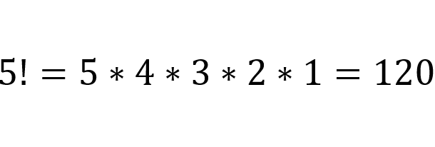
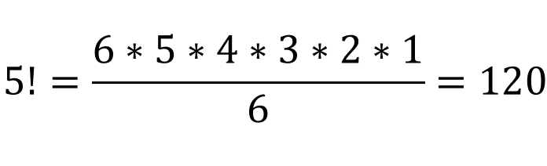
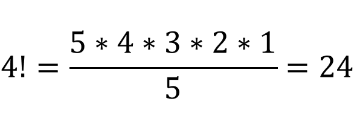
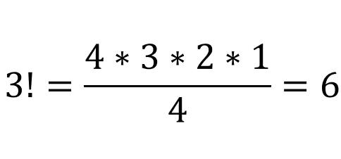
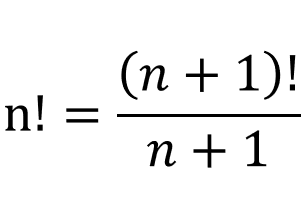
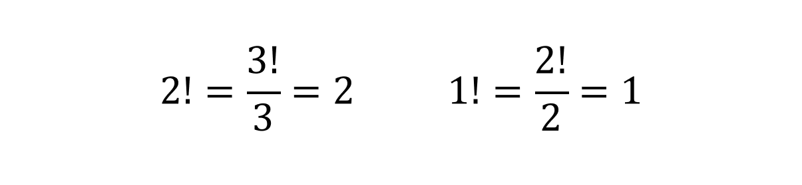

Based on the definition of factorial, we write 5! like this:
But we can also write 5! like this:
This is because the 6 in the numerator will cancel out with the 6 in the denominator. Similarly, we can write 4! like this:
This is because the 5 in the numerator will cancel out with the 5 in the denominator. Similarly, we can write 3! like this:
You will notice a general pattern:
If we do the same for 2 and 1:
Now if we do the same for 0: